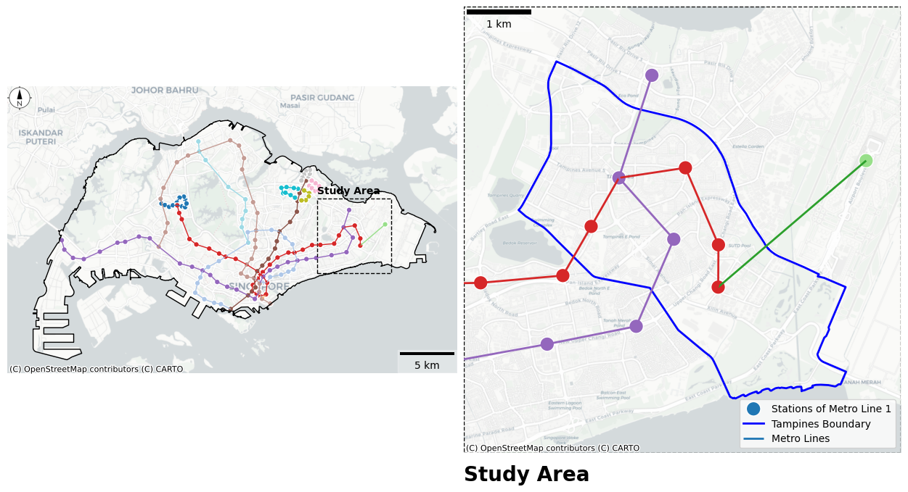
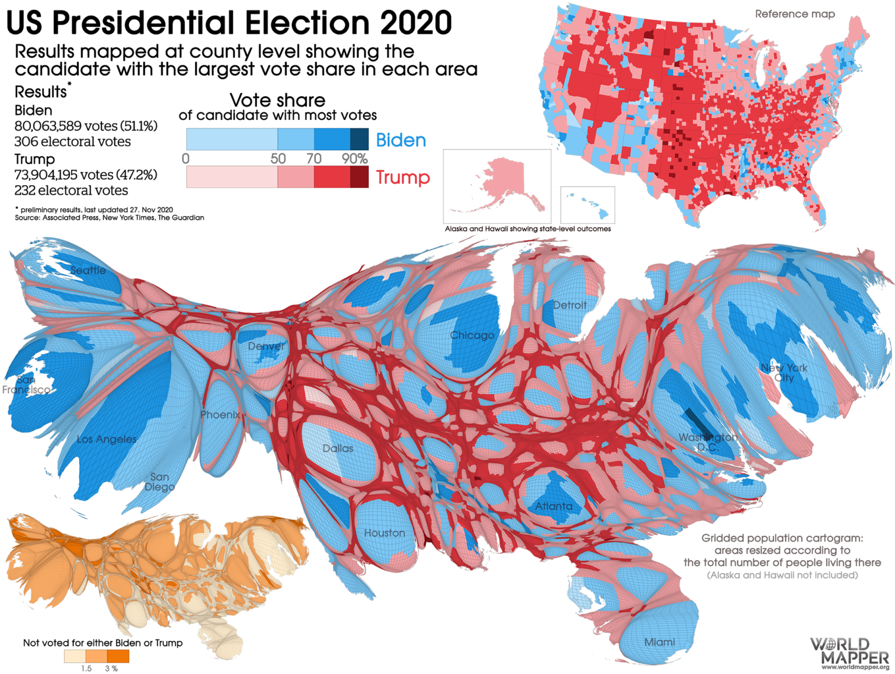

class: center <br> # Spatial Analysis of Urban Data ## Lecture and Tutorial: Cartographic Design [Bayi Li](mailto:barryli081@gmail.com) .toc-wrapper[ <div class="toc"> <a href="#why-map-design" class="toc-item">Why Cartographic Design Matters</a> <a href="#visual-variables" class="toc-item">Visual Variables</a> <a href="#thematic-maps" class="toc-item">Thematic Mapping Choices</a> <a href="#workflow" class="toc-item">Design Workflow</a> </div> ] --- name: why-map-design ## Week 5 Focus This lecture introduces cartographic design as the link between spatial analysis and communication. - How maps guide attention and interpretation - How symbols, colour, labels, and layout affect understanding - How to choose a suitable thematic map type - How to design maps for both analysis and presentation --- ## Learning Objectives By the end of this session, students should be able to: 1. explain the main principles of effective cartographic design 2. choose suitable symbology for point, line, polygon, and raster data 3. distinguish between common thematic map types and their use cases 4. evaluate a map critically for clarity, bias, and visual hierarchy 5. produce a clean map layout in QGIS for an urban analysis task --- ## What Does Cartographic Design Do? A map is not only a spatial dataset placed on a canvas. A designed map should do three things well: - communicate the main message quickly - preserve enough context for interpretation - avoid misleading the reader through poor visual choices Cartographic design is therefore a form of analytical communication. --- ## A Map Always Answers a Question Before styling a map, define the question first. Examples: - Where are the strongest clusters of activity? - Which districts have the highest population density? - How accessible are transport stops from residential blocks? - How does land use differ across the city? The map design should support the question, not compete with it. --- ## Elements of a Map A complete map typically combines: - title - map body - legend - labels - scale indicator - north arrow when appropriate - data source and author note - layout balance and whitespace Not every map needs every element, but every element included should earn its place. --- ## Visual Hierarchy Visual hierarchy controls what the reader sees first, second, and last. To build hierarchy: - make the thematic layer the strongest visual element - reduce the contrast of the basemap - de-emphasise supporting layers - use size, colour, and weight deliberately - avoid giving every feature equal visual importance --- name: visual-variables ## Visual Variables Cartographic design relies on a small set of visual variables: - position - size - shape - hue - value - texture - orientation These variables let us encode difference, order, magnitude, and category. --- .left_half[ ### Qualitative data Best represented by: - distinct hues - different shapes - clear category labels Use when the goal is to separate classes, such as land use type or transit mode. ] .right_half[ ### Quantitative data Best represented by: - ordered colour value - graduated symbol size - density or intensity Use when the goal is to compare magnitude, such as population or count. ] --- ## Colour Design Colour should help interpretation rather than decorate the page. - use **sequential** schemes for ordered low-to-high values - use **diverging** schemes when the data has a meaningful midpoint - use **qualitative** schemes for categories without numeric order - keep saturation under control to avoid visual noise - check whether the scheme remains legible on a projector and in print --- ## Common Colour Mistakes - rainbow colours for ordered values - too many categories with similar hues - saturated basemaps competing with thematic layers - red-green pairings that are difficult for colour-blind readers - dark labels placed on dark polygons Good cartography is often a matter of restraint. --- ## Labels and Typography Labels are part of the map, not an afterthought. - label only what supports the task - use font size to indicate importance - avoid dense overlap - keep naming conventions consistent - use halos or light masks where backgrounds are busy Typography should clarify geography, not create clutter. --- ## Scale and Generalisation A map at city scale cannot display the same detail as a map at neighbourhood scale. Generalisation may include: - simplifying geometry - aggregating features - reducing label density - merging categories - hiding minor features If everything remains visible at every scale, the map usually becomes unreadable. --- name: thematic-maps ## Choosing a Thematic Map Type Different questions require different map types. - choropleth map for rates, ratios, and normalised values - proportional symbol map for counts or totals tied to locations - dot density map for distribution of repeated units - heat or density surface for broad concentration patterns - cartogram when geographic size biases interpretation too strongly Map type is a methodological choice, not just a design choice. --- .right_half[ <figure> <p></p> <figcaption>Example of a polished static thematic map with clear layout and hierarchy.</figcaption> </figure> ] ## Choropleth Maps Choropleth maps are widely used because they summarise area-based data clearly. Use them when: - values are standardised, such as percentage or density - the reporting unit matters, such as planning zones or districts - the main goal is comparison across areas Do not use choropleths for raw counts unless the area sizes are already comparable. --- ## Good Practice for Choropleth Maps in QGIS When building a choropleth map in QGIS, follow these rules first: 1. map a **rate, ratio, percentage, or density**, not a raw count 2. choose a **single clear attribute field** and check for null or extreme values 3. use a **sequential colour ramp** for ordered values, or a **diverging ramp** only when there is a meaningful midpoint 4. start with **4 to 6 classes** so the legend remains readable 5. compare class break methods in QGIS before deciding which one best matches the story in the data 6. use thin, quiet polygon outlines so boundaries do not overpower the pattern 7. keep the basemap light or remove it entirely if it competes with the thematic layer In QGIS, the usual workflow is: - open **Layer Properties -> Symbology** - choose **Graduated** - select the target field - choose a colour ramp - test **Quantile**, **Natural Breaks (Jenks)**, and **Equal Interval** - inspect the map and legend together before exporting The goal is not only a beautiful map, but one that is statistically defensible and easy to interpret. --- ## Dual Practice: QGIS and Python Together For a stronger choropleth workflow, use **Python for data preparation** and **QGIS for visual design and layout**. Use Python when you need to: - clean attribute tables consistently - calculate rates, percentages, or densities - join tabular data to spatial identifiers - detect null values, outliers, or inconsistent units - keep the workflow reproducible for future updates Use QGIS when you need to: - test classification methods visually - compare colour ramps and polygon outlines - refine labels, legend, and layout - export a presentation-ready map quickly This division of labour works well in teaching because Python handles the logic and QGIS handles the communication. --- ## Example Dual Workflow 1. In Python, calculate the mapping variable, such as population density or share of elderly residents 2. Export the cleaned table or GeoPackage with the new field 3. In QGIS, load the layer and open **Graduated** symbology 4. Compare classification methods and choose an appropriate colour ramp 5. Review the legend, labels, and surrounding context 6. Export the final layout as an image or PDF For students, this is often the most practical balance: Python ensures analytical consistency, while QGIS makes design comparison faster and more intuitive. --- ## Classification Choices Matter For choropleth maps, class breaks strongly affect interpretation. Common approaches: - equal interval - quantile - natural breaks - standard deviation Different classification methods can produce different visual stories from the same dataset. --- ## Proportional Symbol Maps Proportional symbols work well when totals matter more than administrative boundaries. Examples: - total passengers at stations - total jobs by employment centre - number of incidents by location They are often better than choropleths when the phenomenon is tied to discrete places rather than areas. --- ## Dot Density and Heat Maps Dot density maps suggest spatial distribution without implying that values are uniform within an area. Heat maps are useful for broad concentration patterns, but they smooth the data and may hide local detail. Choose them when pattern is more important than exact value retrieval. --- ## Cartograms and Alternative Representations Cartograms intentionally distort geography to emphasise data relationships. - useful when area size visually dominates interpretation - useful for media communication and comparison - less suitable when exact geography is essential <div align="center"> <figure> <p></p> <figcaption>Cartograms shift attention from physical land area to thematic comparison.</figcaption> </figure> </div> --- ## Basemaps and Context Basemaps should support the message, not dominate it. - use light neutral basemaps for thematic overlays - reduce labels if they conflict with your own annotations - choose satellite basemaps only when image detail is analytically necessary - remember that default basemaps often reflect someone else's design priorities --- name: storytelling ## Maps: A Powerful Tool of Storytelling A map is rarely neutral. Every map makes an argument about what matters, where to look, and what to conclude. - Maps read as objective, so a spatial claim carries authority that plain text does not - They compress relationships — proximity, clustering, flow, inequality — into a single glance - Framing choices such as centring, colour, and what is left off guide the reader like a narrator Cartographic design is the craft of telling that story clearly, and honestly. ??? Think of John Snow's cholera map, or a choropleth of access to hawker centres. Each one does not just show data — it makes a point. The power to persuade is exactly what we are designing for. --- ## What Makes a Map Tell a Story A map moves from a picture to a narrative when the design does deliberate work. - a clear **message**: one main idea the reader should leave with - **focus**: visual hierarchy that leads the eye to that message first - **context**: just enough basemap and reference to make the pattern legible - **sequence**: for a map series or interactive map, an order that builds an argument - **framing**: an honest title and legend that name what is, and is not, being shown The story should emerge from the data, not be imposed on it. --- ## Example: An Interactive Story Map Interactive maps let the reader explore, filter, and follow a narrative at their own pace, rather than reading a single fixed image. **The Pudding — "Happy Map"** <a href="https://pudding.cool/2026/02/happy-map/" target="_blank">https://pudding.cool/2026/02/happy-map/</a> <iframe class="map-embed" src="https://pudding.cool/2026/02/happy-map/" title="The Pudding — Happy Map" loading="lazy"> </iframe> --- ## Example: An Interactive Story Map A data-journalism piece that combines an interactive map with scrollytelling to guide the reader through a spatial story step by step. What to notice in a piece like this: - the map is paired with text that builds an argument, not left to speak alone - interaction is **guided**, so the reader is led through a sequence rather than left to wander - each state of the map answers one question before moving to the next - design, colour, and framing still carry the message, exactly as in a static map ??? Ask students: what is the one main message the piece wants you to leave with? Where does interaction help the story, and where might it let the reader miss the point? This connects directly to the next slide on storytelling and responsibility. --- ## Storytelling and Responsibility The same choices that make a map compelling are the choices that can mislead. - classification breaks can flip a choropleth's whole story - colour emphasis can exaggerate or hide a pattern - selective framing can leave out inconvenient areas or values - visual precision can imply certainty the data does not support A persuasive map demands critical reading. Storytelling power and cartographic responsibility are the same fact. .references[ - Monmonier, M. (2018). *How to Lie with Maps*, 3rd ed. University of Chicago Press. - Roth, R. E. (2021). Cartographic design as visual storytelling. *The Cartographic Journal.* ] --- ## How Maps Can Mislead Maps can mislead even when the data is correct. Typical causes: - poor classification choices - inappropriate symbol scaling - misleading colour emphasis - too much or too little context - unequal area sizes in choropleth maps - visual precision that exceeds data precision Critical cartography means reading the design as well as the data. --- name: workflow ## Recommended Design Workflow 1. define the question and audience 2. choose the right map type 3. decide the geographic extent and scale 4. simplify the layer stack 5. style the thematic layer first 6. add labels and supporting context 7. review the legend and layout 8. test whether the message is immediately visible --- ## Practical Workflow in QGIS A simple classroom workflow can be: 1. load cleaned spatial data 2. inspect attribute fields and data types 3. choose a symbology method suited to the variable 4. test class breaks and colour ramps 5. move to layout view 6. add title, legend, scale bar, and source note 7. export as image or PDF This keeps design decisions tied to analytical intent. --- ## Map Critique Checklist When reviewing a map, ask: - What is the main message? - Is the map type appropriate for the variable? - Does the basemap help or distract? - Are colours and labels readable? - Is the legend easy to interpret? - Could the map be misleading because of scale, classification, or symbol choice? If these questions are hard to answer, the design likely needs revision. --- ## Mini Exercise Take one urban dataset from a previous week and propose a cartographic design for it. Your design should specify: - target audience - map type - variable being mapped - classification or symbol rule - basemap choice - key layout elements - one likely design risk --- ## Key Takeaways - Cartographic design turns analysis into communication. - Every design choice shapes what the reader notices and concludes. - Map type, colour, labels, and scale must match the data and the question. - Good maps are selective, readable, and honest about uncertainty. --- <xL>Continue with Lecture: </xL><button onclick="window.location.href='vector.html'">Go to Spatial Analysis of Vector Data</button> <xL>Back to course menu: </xL><button onclick="window.location.href='index.html'">Go Back to Menu</button>